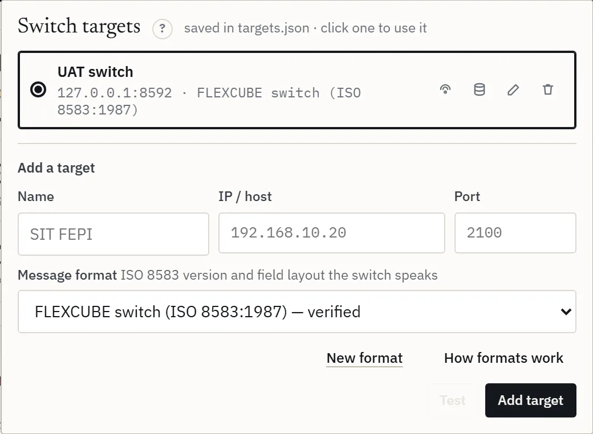
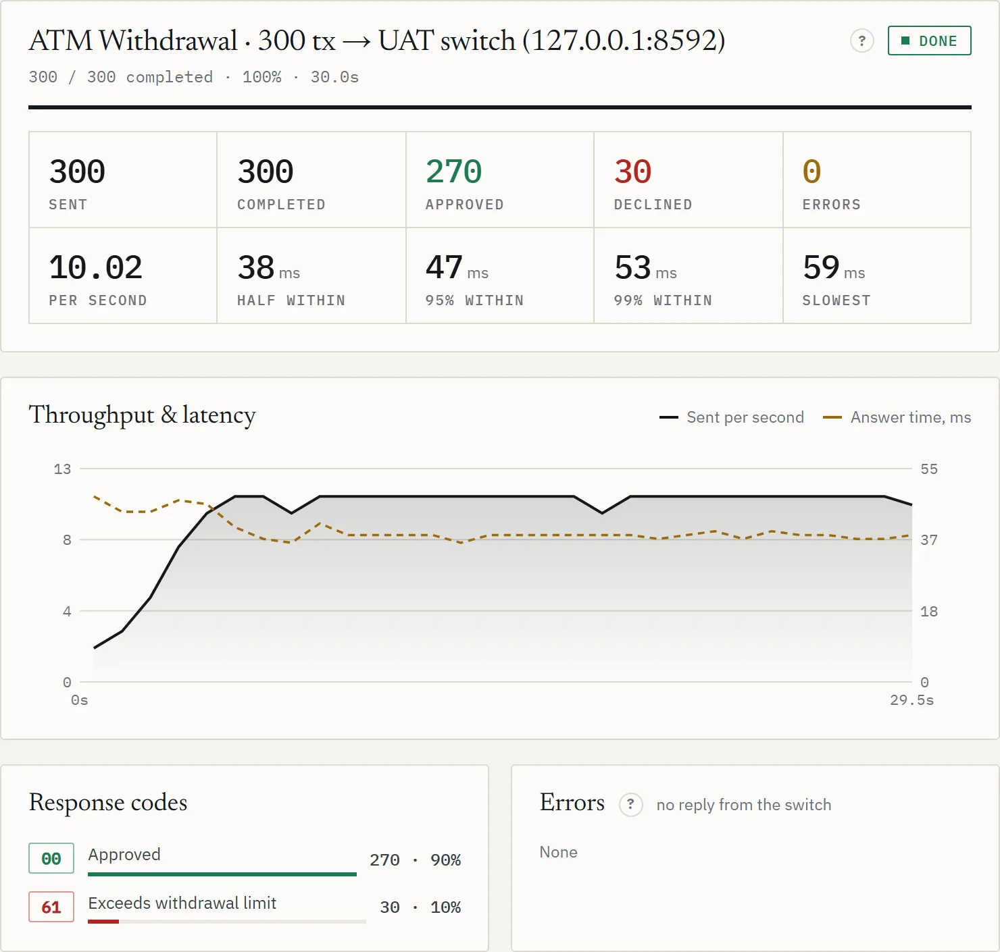
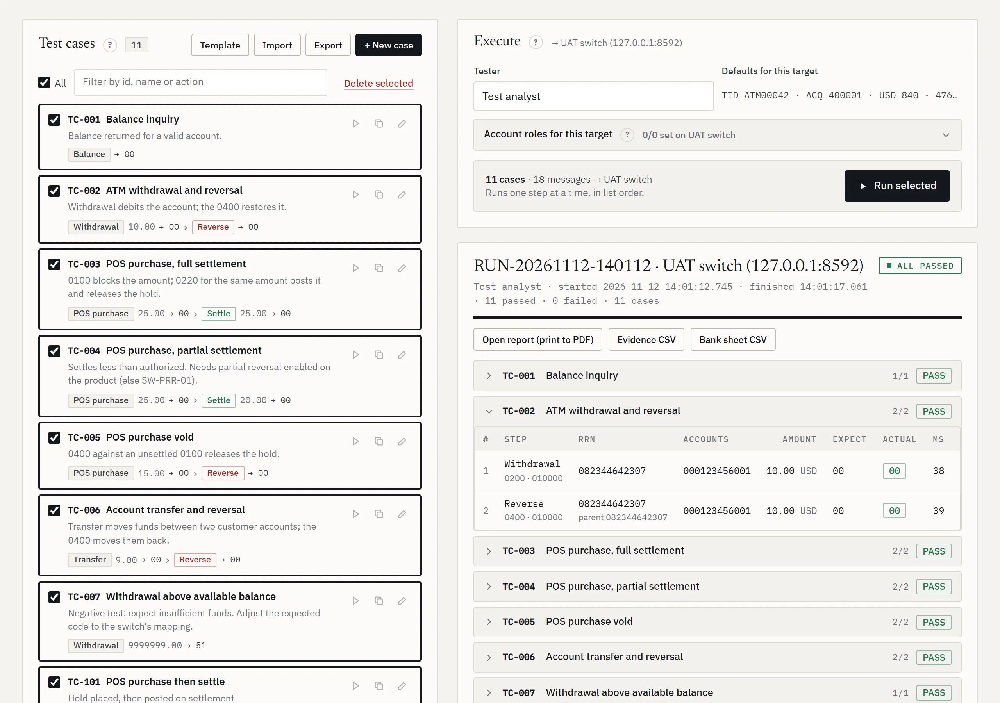
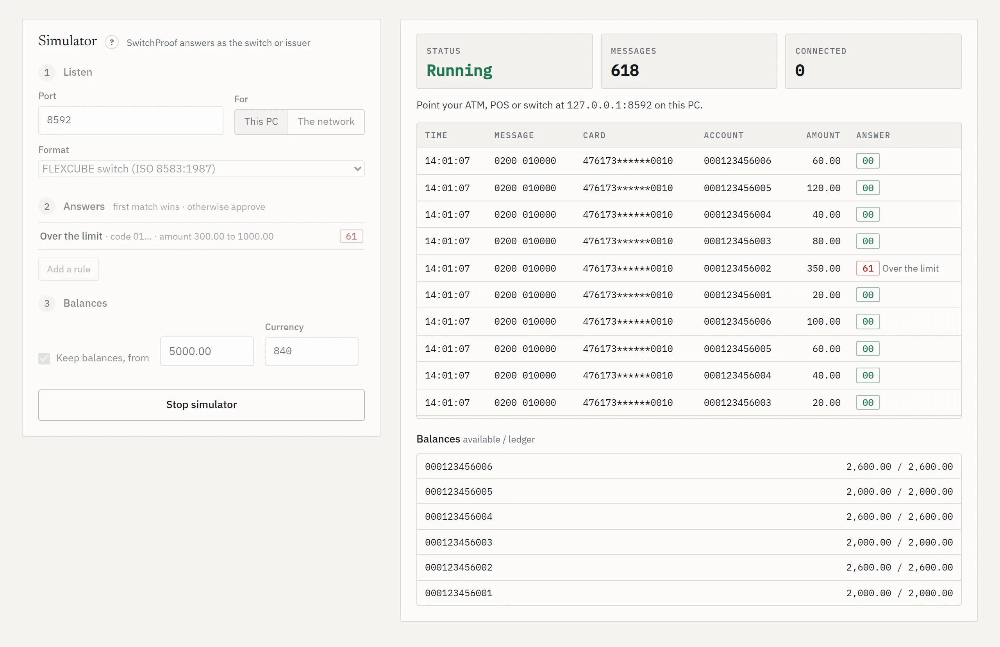

Help and guide
No topic matches. Try another word, or write to support@switchproof.online.
Start here
SwitchProof tests your card switch with real ISO 8583 messages. The console runs in this browser. SwitchProof for Windows, on a PC inside your network, sends the messages and keeps your data.
Install SwitchProof
- Sign in at switchproof.online on a PC that can reach your switch (bank network or VPN).
- Download SwitchProof-Setup.exe: about 35 MB, Java included, no admin rights needed.
- Run it. If Windows shows Windows protected your PC, choose More info, then Run anyway.
- SwitchProof starts by itself and opens this site. Keep its window open while you test.
| Start it again | From the Start menu or the desktop |
| The program | %LOCALAPPDATA%\SwitchProof |
| Your data | %USERPROFILE%\SwitchProof: see Your data |
Updating
When a new version is out, Update SwitchProof appears in the account menu. Run the installer it downloads: it closes SwitchProof, updates it and starts it again. Your targets, test cases and evidence are kept. If this site needs a newer version than yours, it shows Update SwitchProof before anything else and carries on by itself once the new one is running.
Sign in and connect
- Sign in with your email, or Create an account.
- On Connect your agent, press Connect. If the browser asks whether this site can reach apps on this device, choose Allow.
- The console opens. Your switch shows top right, under Target.
If something goes wrong
- Your browser is blocking this page
- Click the icon left of the address, then Site settings. Set Loopback network to Allow, come back and press Check again. If your organisation manages the browser, ask IT to allow switchproof.online for local network access (Chrome and Edge policy
LocalNetworkAccessAllowedForUrls). - SwitchProof isn't answering
- Open SwitchProof from the Start menu, then try again.
- Connect doesn't find it
- Open Pair manually: the agent address (
http://127.0.0.1:8787on the same PC) and the pairing code shown in the SwitchProof window. - Forgot your password
- Forgot password? on the sign-in page emails a link. A link works once and expires: ask for a new one if it says so.
- Pair with another PC
- Account menu, Disconnect agent, then connect again.
Add your switch
A target is one switch: its address, port and message format. Keep one per environment, such as UAT and production.
- Click Target, top right.
- Fill in Name, IP / host and Port.
- Pick the Message format your switch speaks: see Message formats.
- Press Test. It shows reachable and how long the connection took, or why it failed.
- Press Add target, then click it in the list to use it.
| Setting | What it is | Example |
|---|---|---|
| Name | What you call this switch | UAT switch |
| IP / host | The switch's address, as this PC reaches it | 10.20.30.40 |
| Port | The port the switch listens on for acquirer traffic | 2100 |
| Message format | How the switch writes ISO 8583 | FLEXCUBE (ISO 8583:1987) |

Each target in the list has buttons to test its connection, set up its bank database (Money checks), edit it or remove it. Each target also keeps its own settings, sources, keys and account roles: switching target switches all of them.
Send a first test
- Load test, step 01: pick Sign On. It needs no account.
- Step 03: set Executions to 1.
- Press Run test. A working switch answers with a network response (0810): Approved 1.
- Now pick Balance Inquiry, paste one test account under step 02, and run again.
No answer? See Troubleshooting.
Load test
Send many messages at a set pace and see how your switch copes.
- 01 Transaction: one type, or a Bundle that mixes several types in the shares you set. Your types adds your own (Your own types).
- 02 Data set: the accounts to use, one row per message. Drop a CSV or paste rows. Template gives the columns for the type.
- 03 Load profile: how many, and how fast.
- 04 Message defaults: the amount, currency, terminal, institutions and card used when a row leaves them blank (Target settings).
- Press Run test. Abort stops it. Then read the results.
Bundles and presets Team
Click types to add them to the bundle, set each one's share, and choose what follows an approval: No follow-up, Reverse after approval or Settle after approval. The presets fill a bundle for you:
| Balance-neutral | Every money-moving message is reversed straight after approval, so accounts end where they started |
| ATM day | Withdrawals, balance inquiries, mini statements and a few transfers |
| POS day | Purchases (settled), cash advances, offline purchases and refunds |
Data set
| Type | Columns |
|---|---|
| Withdrawal, purchase, refund, deposit, cash advance, offline purchase | from_account,amount,currency |
| Transfer, bill payment | from_account,to_account,amount,currency |
| Balance inquiry, mini statement | from_account |
| Sign on | None |
The header row is optional. Comma, semicolon or tab. Currency as 840 or USD. Example row: 000123456001,20.00,USD.
Load profile
| Setting | What it does | Example |
|---|---|---|
| Executions | Messages in total | 600 |
| Over (seconds) | Spread them over this long. 0 = a burst, as fast as possible | 60 = 10 a second |
| Ramp-up (seconds) | The rate climbs from zero to full over this long, then holds | 10 |
| At once | Messages waiting for their reply at the same moment. Each one is a connection to the switch | 20 |
| Match executions to uploaded rows | One message per row of the data set | On |
The rate you'll get shows next to the heading, such as ≈ 10 tx/s. The Free plan runs up to 200 messages, 5 at once.
Load test results

| Tile | Means |
|---|---|
| Sent · Completed | Messages sent, and those finished (answered or failed) |
| Approved · Declined | By the response code: see Response codes |
| Errors | No usable answer: see the kinds of error |
| Per second | Messages sent per second |
| Half within · 95% within · 99% within | Half, 95 and 99 of every 100 answers came within this time, from request to reply |
| Slowest | The slowest answer of the run |
Not sent at the pace asked means SwitchProof itself ran short of free connections, so the switch isn't to blame for the slow pace. Press Use N at once (or raise At once) and run again.
| By transaction type | For a bundle: each type and its follow-ups, with their own counts and times |
| Throughput & latency | Sent per second and answer time, second by second, for the whole run |
| Response codes | How many answers carried each code |
| Errors | Messages with no usable answer, by kind |
| Recent transactions | The newest 200, with type, RRN, accounts, amount, result and time |
| Switch report | Every request and response of the run, field by field |
| Money trail · Check money side | What each transaction did to the money: see Money checks |
Open transactions
Approved financial transactions land here, below the results, so you can finish them.
- Settle sends a completion (0220) for an authorization. The settle amount can differ from the authorized one.
- Reverse sends a reversal (0400) with the original RRN.
- Select… picks rows: all shown, authorizations, or those older than 15 minutes. Then Settle selected or Reverse selected.
- Remove from list drops rows without sending anything. Export CSV downloads the rows shown, or the selection.
- Filter by type, RRN, account or approval code.
UAT test cases
A test case is a short chain of steps, each with the answer you expect. Run cases against any target and keep the evidence.
- UAT tab, + New case. Or Import a CSV: Template downloads the layout.
- Give it a name and a scenario. A pre-condition and expected result are optional and appear on the report.
- Add steps: POS purchase, Withdrawal, Transfer, Balance, + Settle, + Reverse.
- For each step: the accounts, amount, currency and what to Expect.
- Save case.
| Expect | Passes when the answer is |
|---|---|
00 | Approved |
05,51 | Any code in the list |
!00 | Any decline |
| Step column | What it does |
|---|---|
| Settle amt · Of RRN | Settle and Reverse act on the latest approved step above them, or on the RRN you enter |
| Source | Whose card, which acquirer: see Sources |
| Card | A card number for this step only |
| Proc | A processing code for this step only |
| Remote | Sent with the target's remote acquirer (remote on-us) |
Account roles
Write @ROLE instead of an account number, such as @SAVINGS. Each target maps a role to its own account (Execute, Account roles for this target), so the same cases run on UAT and production. Negative cases need an account prepared for them, such as one with a debit freeze.
CSV layout
One row per step; the case's own columns only on its first row. Importing a case_id that exists replaces that case.
case_id,case_name,category,description,precondition,expected_result,step,action,from_account,to_account,amount,currency,settle_amount,of_rrn,card,remote,processing_code,expected_code,note TC-102,Transfer then reverse,,,,,1,TRANSFER,000123456001,000123456002,9.00,840,,,,,,00, TC-102,Transfer then reverse,,,,,2,REVERSAL,,,,,,,,,,00,
Running UAT
- Tick cases on the left, or All. Filter by id, name or action.
- Tester: the name on the report.
- Press Run selected. Each step shows the answer against what you expected: pass or fail.

| Open report | The printable report: print it to PDF for sign-off |
| Evidence CSV | Every step: message type, RRN, the code expected and the code received, time taken, and the money check |
| Bank sheet CSV | One row per case, in the bank's test-sheet columns |
| Check money again | FLEXCUBE can post minutes after the switch approves: look again now (Money checks) |
| Run history | Every run, saved in uat-runs in your data folder. Click one to open it |
The Free plan runs up to 10 cases at a time, and its reports carry a Free watermark.
Simulator Team
SwitchProof answers as the switch or the issuer, to test an ATM, a POS or a switch's own link without the real host.
- Listen: the port, and who may connect: This PC only, or The network. Pick the message format.
- Answers: add rules. The first rule that matches wins; anything else is approved.
- Balances: tick Keep balances to give every account an opening balance that moves with what is approved.
- Press Start simulator, then point your ATM, POS or switch at this PC's address and the port.

| Rule setting | Example |
|---|---|
| Answer code | 05 |
| Message (100, 200 …) | 200 = financial requests only |
| Processing code starts · Card starts | 01 = withdrawals · 400000 = cards of that BIN |
| Account · Amount from / to | Only this account, or only amounts in this range |
| Delay ms | 3000 = answer after 3 seconds |
| Don't reply at all | To test what your side does on a timeout |
Network messages (0800) are always approved. Advices and reversals are acknowledged unless a rule says otherwise. With balances kept, a debit beyond the available balance is declined (51), and each reply carries the balances in field 54. The log shows every message and its answer.
From a script: switchproof-cli simulator runs it with the same settings until stopped (Command line).
Stand-in rehearsal Enterprise
Rehearse a core banking cutover. The card switch runs in stand-in while no core is connected, then its queue goes to the New Flexcube Core. SwitchProof plays the switch through each step and reconciles every transaction, account and GL. Each step waits for you, as it would on the night.
- Switch to stand-in: days in stand-in, the stand-in limits, and whether accounts without a balance record are declined (91) or approved within the limits.
- Positive balance file: the Legacy Core's balances at the cut-off, as a CSV of
account,available_balance[,currency]. Or take the New Flexcube Core's balances for the accounts you list, or skip. - Transactions at the switch: how many withdrawals, purchases, pre-authorizations and transfers; how many are completed, reversed or sent twice; amounts; authorizations from before the cut-off; then Post to the switch.
- Connect the New Flexcube Core: a sign-on (0800) only.
- Samples: balance inquiries show whether the migrated balances match the file; the first advices show the queue posts.
- Release the queue: at most so many a second, how many in flight, and the time it must finish in.
- Reconcile runs by itself: every RRN, each account (before plus approved in stand-in equals after) and the switch's totals against the GLs.
- Fully online: the switch leaves stand-in. Balance inquiries check what customers now see.
- Clearing: the authorizations still open are cleared, by 0220 advices or a clearing file the bank loads. Or Finish without clearing.
Reconciling reads the bank database, so set it up for the target first (Money checks). Report and CSV keep the evidence, Problems only filters the list, and Rehearsals lists earlier ones.
Switch setup Enterprise
See how the FLEXCUBE switch interface is set up for each processing code, and change it with a pack of scripts you review and run yourself. SwitchProof only reads the bank database; it never changes it.
- Read setup: SwitchProof reads this switch's setup from the bank database. Without a database connection, Upload the setup: run each SELECT shown in your SQL tool, save the result as CSV with headers, and upload it with the package files. The files stay on this PC.
- Transaction: pick a processing code from the list, or enter a new code and name.
- Life cycle: the product, which cards it applies to (on-us, remote on-us, off-us), the other side of the entry, and what you want at each stage (authorization, advice, completion, reversal, repeats). Add charges and your own Rules: When a hook runs, If conditions hold, Then an action.
- Review: before and after, and anything blocking.
- Deploy: Build the pack and download it (.zip). Tick off the checklist as you go: back up, compile and check VALID, change, check then COMMIT, test on UAT, Re-check setup.
Sources shows where the setup was read from: the packages, the tables, and traffic from the last 1, 7 or 30 days. Screen steps are listed for anyone who would rather make the change in the screens than run the change script.
Target settings
Under 04 Message defaults on the Load test screen. They're saved per target, and UAT runs use them too.
| Setting | What it does | Example |
|---|---|---|
| Default amount · currency | Used when a row leaves them blank | 10.00 · 840 |
| Terminal ID | Field 41 | ATM1 |
| Acquiring inst. | Field 32 | 100001 |
| Forwarding inst. | Field 33. Blank = not sent | |
| Card number (PAN) | Field 2: the test card | 4000000000000002 |
| Remote acquirer | Sent on UAT steps marked Remote (remote on-us) | |
| Check balances in UAT runs | See Money checks | Don't check |
| Rotate PANs | Cards to take turns, one per line. Overrides the card above | |
| Sources | See Sources |
Connection to the switch
| Setting | What it does |
|---|---|
| Connections | One per message: opened, used once, closed. Kept open: messages share connections that stay open, as an acquirer's link does; replies are matched by trace number |
| How many when kept open | Connections to keep. 1 for a switch that allows only one |
| Echo test seconds quiet | An echo test (0800) on a kept-open connection that has been quiet this long. No answer: the connection is opened again. Blank = no echo |
| TLS | Off: plain TCP. On: encrypted |
| Certificate fingerprint | For a switch with its own certificate: its SHA-256 fingerprint, which Test shows. Blank = the certificate must be trusted by this PC and name the switch's address |
SwitchProof waits 10 seconds to connect and 40 seconds for a reply. To change the reply wait, set responseTimeoutMs in agent.properties in your data folder and restart SwitchProof.
Sources
Where transactions come from: whose card (field 2, by its BIN) and who acquired it (field 32). Pick a source per run, bundle item or UAT step. Open them under Message defaults, Edit sources.
| Column | What it does |
|---|---|
| Kind | On-us, remote on-us, off-us, international, our card abroad, or custom |
| Card F2 · Acquirer F32 · Forwarding F33 · Terminal F41 | The values this source sends. Blank = the message defaults |
| MCC F18 · Entry F22 | Merchant category and how the card was read |
| Should post | To the customer's account or to a GL: what money checks expect |
Add the ready-made sources fills in the common ones to start from. Then Save sources.
Your own transaction types Team
- Load test, 01 Transaction, Your types, then New type.
- Start from the built-in type closest to yours. Give it a name, message class and processing code.
- Change or add fields. Values can hold placeholders, filled in for each message.
- Test send to the active target: Send one message and see the answer.
- Save. It then shows with the built-in types.
Placeholders: {random:8} {date:MMdd} {account} {to} {amount} {currency} {terminal} {stan} {rrn} {pan}. Example: field 48 = TKN{random:8}.
Submit for approval sends the structure of your type to SwitchProof for review. If it's approved, it becomes a built-in type for everyone in a later release. Fixed values are masked (letters become A, digits 9) unless you choose to share them.
PIN, chip data and MAC
Add a PIN block, chip data and a MAC to card requests, as a real terminal does. Under Message defaults, Security, saved per target.
Test keys only. SwitchProof is not an HSM: never give it production keys.
| Setting | What it does | Example |
|---|---|---|
| Send a PIN | A test PIN, encrypted under your PIN key into field 52 | 1234 |
| Block format | ISO 0, ISO 1 or ISO 3: ask which your switch expects | ISO 0 |
| Send chip data | Field 55 with the usual tags of an online authorization | |
| Sign messages (MAC) | X9.19 retail MAC, X9.9 single DES, or triple-DES CBC | X9.19 |
| PIN key · MAC key | 16, 32 or 48 hex digits. Paste once, then Save key |
- After saving, only the key's check value (KCV) shows. Compare it with the switch's. Change or Remove a key any time.
- Keys are kept on this PC, protected with your Windows account.
- The PIN and chip data go on card requests (authorizations and financial requests). The MAC goes on every message to this target: in field 64, or field 128 when the message has fields above 64.
- The chip cryptogram is a placeholder, so a host that checks it declines. MACs on replies aren't checked yet.
Message formats
A format tells SwitchProof how your switch writes ISO 8583: text or packed digits, ASCII or EBCDIC, the bitmap, the length in front. Four are built in: FLEXCUBE, ISO 1987, ISO 1993 and ISO 2003. Make your own under Target, New format, and check it against a message from your switch before anything is sent. Saving your own formats is part of the Team plan.
Read the formats guide: each setting, with examples.
Money checks Enterprise
Check what each transaction really did to the money, not only its response code.
Bank database
For each RRN, SwitchProof reads the switch log, the accounting entries and the amount blocks. It only reads (SELECT): use a read-only database user. The details stay on this PC. Open it from the database button on a target in the Target list, or from Switch setup.
| Setting | Example |
|---|---|
| Host · Port · Service name | 10.0.0.20 · 1521 · the UAT database's service |
| Schema owner | The schema that owns the FLEXCUBE tables. Blank when the read-only user has synonyms for them |
| User · Password | The read-only user. The password is protected with your Windows account |
| In UAT runs | Report problems, fail the step on a problem, or don't check |
| Driver path | Oracle's ojdbc8.jar or ojdbc11.jar, or its folder. In File Explorer, hold Shift, right-click the file, Copy as path |
Press Test connection, then Save.
Without the database: balance check
Check balances in UAT runs by balance inquiry (Message defaults) sends a balance inquiry before and after each UAT step that moves money, and checks the change: two extra messages per account, per step. Choose Check, and report differences or Check, and fail the step on a difference. It's not used once a bank database is set up for the target.
What did this transaction do?
Money trail (under the results, and in Open transactions) looks up one RRN: every message, amount block, accounting entry and balance. Clicking the money result next to a transaction opens its trail directly.
Command line
Run test cases and load tests from a script or a CI pipeline, with JUnit results and an exit code. switchproof-cli.exe is installed with SwitchProof 1.5.0 and newer, in %LOCALAPPDATA%\SwitchProof. It uses the same targets, cases and settings as the console.
| Command | What it does |
|---|---|
| uat | Runs test cases |
| load | Runs a load test |
| simulator | Answers as a switch with the simulator's saved settings, until stopped |
| targets · cases | Lists the saved switches, or the saved test cases |
| help · version | The full list of options · the version |
| Option | For | What it does |
|---|---|---|
| --target NAME | uat, load | The switch, by name or id. Default: the active one |
| --cases all | A,B | uat | Which cases, by id or name |
| --tester NAME | uat | Shown on the report |
| --type TYPE | load | Such as WITHDRAWAL, PURCHASE, TRANSFER, BALANCE_INQUIRY. Default SIGNON |
| --count · --seconds · --ramp · --at-once | load | As in the load profile. Defaults 100, 0, 0, 10 |
| --from A,B · --to A · --amount · --currency | load | Accounts (@ROLE works) and amount |
| --max-errors-percent P | load | Fail above this share with no usable answer. Default 0 |
| --max-declined-percent P · --max-p95-ms MS | load | Fail above this share declined, or when 95% took longer |
| --junit FILE · --report FILE · --json FILE | uat, load | JUnit XML, the HTML report, the full evidence (uat) |
| --port N · --network | simulator | Another port; accept other machines |
| --data DIR | any | Use this data folder |
Exit code: 0 passed, 1 a test failed, 2 it could not run. A Linux bundle (Java 8 or later) is available on request.
"%LOCALAPPDATA%\SwitchProof\switchproof-cli.exe" uat --target "UAT switch" --cases all --junit uat.xml "%LOCALAPPDATA%\SwitchProof\switchproof-cli.exe" load --type WITHDRAWAL --from @SAVINGS --amount 10.00 --count 600 --seconds 60 --max-p95-ms 800 --junit load.xml
Plans and account
| Plan | Adds |
|---|---|
| Free | Load tests up to 200 messages, 5 at once. UAT runs up to 10 cases, with a watermark. ISO 8583:1987 formats |
| Team | Unlimited load tests, bundles, full UAT runs, your own types and formats, ISO 1993 and 2003, the simulator |
| Enterprise | Everything in Team, plus money checks, stand-in rehearsals and switch setup |
Prices and trials: Pricing. Click your plan, top right, to buy by card, redeem an invite code, or Talk to us for an invoice, a bank transfer or a price for your team. Plans renew monthly until you cancel, with a full refund within 14 days of your first payment (Refunds).
The account menu
| Feedback | Ask for a feature or report a problem. Vote on others' requests. Never include card numbers, account numbers, switch addresses or other bank data |
| Videos | Step-by-step videos |
| Releases | What changed in each version |
| Help and guide | This page |
| Refer a colleague | On the Free plan: 30 days of Team when someone you refer buys a plan (referral terms) |
| Update emails | Emails about new videos and releases, on or off |
| Update SwitchProof | Shows when a new version is out: see Updating |
| Disconnect agent · Sign out | Forget the pairing with this PC's SwitchProof · sign out |
The moon button, top right, switches between light and dark.
Your data
- Messages go from SwitchProof on your PC straight to your switch. Switch addresses, accounts and evidence never reach this site.
- Everything is kept in
%USERPROFILE%\SwitchProof: targets (targets.json), test cases (uat-cases.json), runs and evidence (uat-runs), formats (profiles), your types (types), simulator settings and stand-in rehearsals. - Database passwords and keys are protected with your Windows account. To move to another PC, copy the folder, then enter the passwords and keys again there.
- Use test cards, test keys and a read-only database user.
More in the Privacy Policy.
Troubleshooting
The kinds of error
- No connection
- The switch couldn't be reached or refused. Check the address and port from this PC, the VPN, firewalls, and whether the switch accepts this PC's address. Test on the target shows the cause.
- No reply
- The message arrived but nothing came back within 40 seconds. Usually the switch can't read it: the length header, bitmap or encoding differs (Message formats). The switch's own log tells you more.
- Dropped
- The switch closed or reset the connection without replying. Often the same as No reply. A switch that allows one connection: Kept open, How many 1 (Connection).
- Unreadable reply
- The reply doesn't fit the format. Paste its hex in New format to see where reading stops.
- Not sent
- The message couldn't be built, so nothing left this PC. The message says why, such as a missing key or a value too long for its field.
Declines that point at the setup
- 30 or 904, format error
- The switch read the message differently. Compare the Switch report with your switch's specification, and the format's fields with it.
- 96 or 909, system malfunction
- The switch or the core failed on it: look the RRN up in the switch's log.
- 91 or 911
- The switch couldn't reach the core or issuer.
- 55 or 117, incorrect PIN
- The PIN key or block format differs from the switch's. Compare the key check values (PIN, chip data, MAC).
- 51 or 116, insufficient funds
- The test account needs a balance, or the amount is too big.
- 12, 57 or 58, not permitted
- The processing code, card or terminal isn't set up for this transaction on the switch.
Other problems
- Not sent at the pace asked
- Raise At once, or press Use N at once (Results).
- Part of the Team or Enterprise plan
- That feature needs a higher plan: see Plans.
- Bank database: Test connection fails
- Check the driver path, then host, port and service name, then the user's grants. Leave Schema owner blank only when the user has synonyms.
- Simulator: other machines can't connect
- Choose The network under Listen, and check that Windows Firewall lets SwitchProof accept connections.
- Something else
- Write to support@switchproof.online with the RRN, the time and what you saw. Never send card numbers or bank data.
Response codes
Field 39 of the answer. ISO 8583:1987 uses two digits; 1993 and 2003 use three-digit action codes. A format can name its own approved codes.
| 1987 | 1993 / 2003 | Meaning |
|---|---|---|
| 00 | 000 | Approved |
| 001 · 002 | Honour with identification · approved for a partial amount | |
| 04 | Pick up the card | |
| 05 | 100 | Do not honour |
| 06 | Error | |
| 12 | 902 | Invalid transaction |
| 13 | 110 | Invalid amount |
| 14 | 111 | Invalid card number |
| 15 | No such issuer | |
| 30 | 904 | Format error |
| 39 · 52 · 53 | No credit · checking · savings account | |
| 51 | 116 | Not sufficient funds |
| 54 | 101 | Expired card |
| 55 | 117 | Incorrect PIN |
| 106 | PIN tries exceeded | |
| 56 | No card record | |
| 57 | 119 | Not permitted to cardholder |
| 58 | Not permitted to terminal | |
| 61 | 121 | Exceeds withdrawal limit |
| 91 | 911 | Issuer or switch inoperative · issuer timed out |
| 92 | No routing available | |
| 94 | Duplicate transmission | |
| 96 | 909 | System malfunction |
| 400 · 800 | Reversal accepted · network message accepted |
Glossary
- Agent
- SwitchProof for Windows: the program on your PC that sends the messages
- Target
- One switch: its address, port, format and settings
- MTI
- Message type. 0100 authorization, 0200 financial request, 0220 completion or advice, 0400 / 0420 reversal, 0800 network (sign-on, echo). The answer adds 10: 0210, 0810
- Bitmap
- The part of a message that says which fields it carries
- Processing code
- Field 3: what the transaction is, such as 010000 withdrawal or 310000 balance inquiry
- STAN · RRN
- Field 11, the trace number · field 37, the retrieval reference number that identifies a transaction
- PAN · BIN
- The card number (field 2) · its first digits, which name the issuer
- On-us · remote on-us · off-us
- Our card at our terminal · our card at a partner's terminal · another bank's card
- Advice · completion
- A message that tells rather than asks (0120, 0220) · the final amount of an authorization
- Repeat
- A message sent again because no answer came (0121, 0221, 0421)
- PIN block · KCV
- The encrypted PIN in field 52 · a key check value, to compare keys without showing them
- MAC
- A message authentication code: proof the message wasn't changed
- Chip data · ARQC
- Field 55, the card's EMV tags · the card's request cryptogram
- Stand-in
- The switch approving on its own, from a balance file, while the core is away
- Clearing
- Settling authorizations at their final amounts
- GL
- A general ledger account
- Ramp-up · at once
- The rate climbing to full · messages waiting for a reply at the same moment
- 95% within
- 95 of every 100 answers came within this time